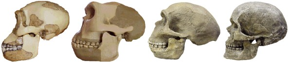
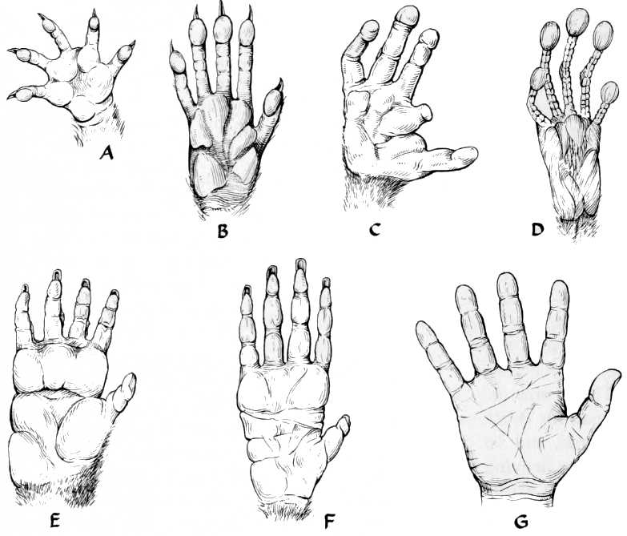
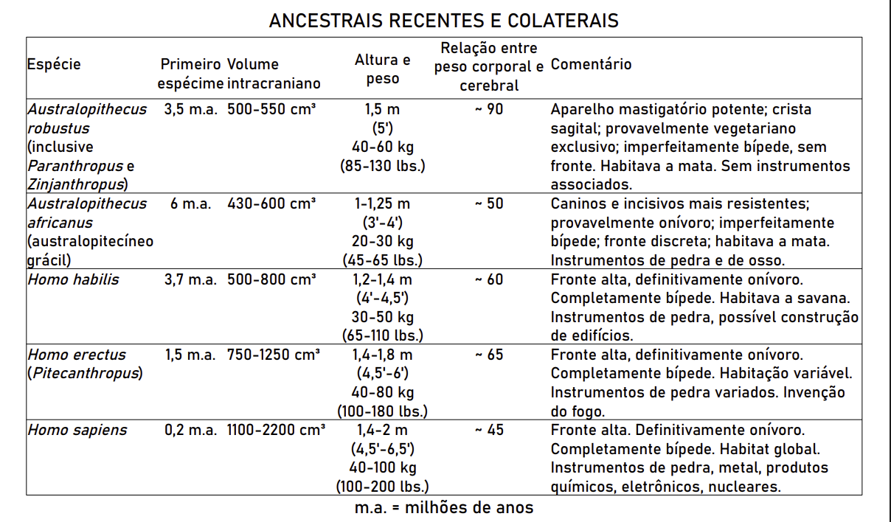
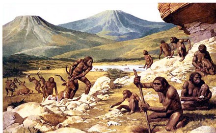
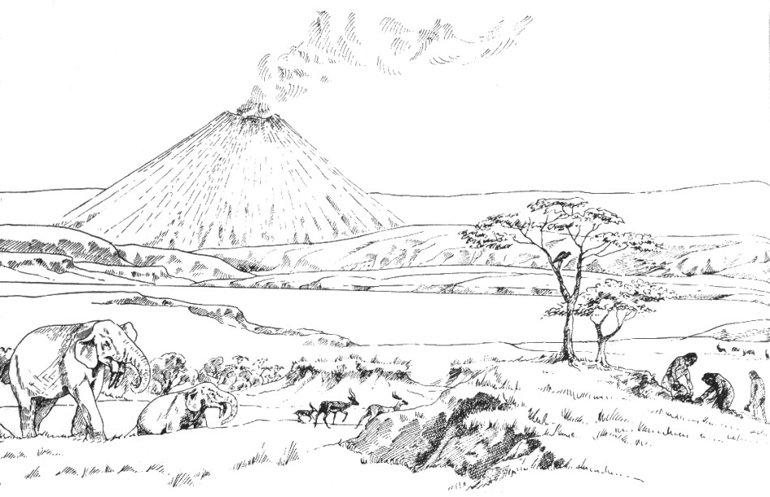
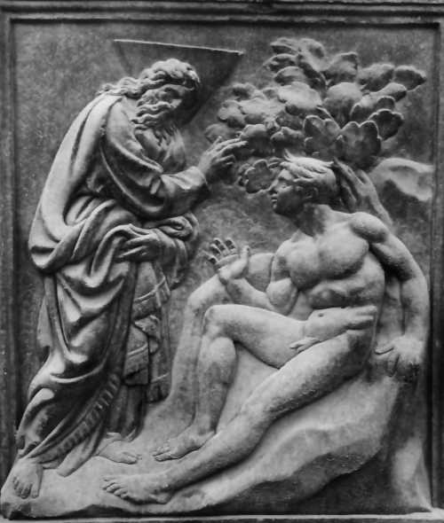
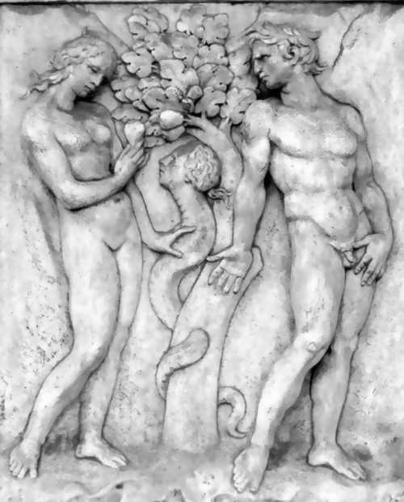
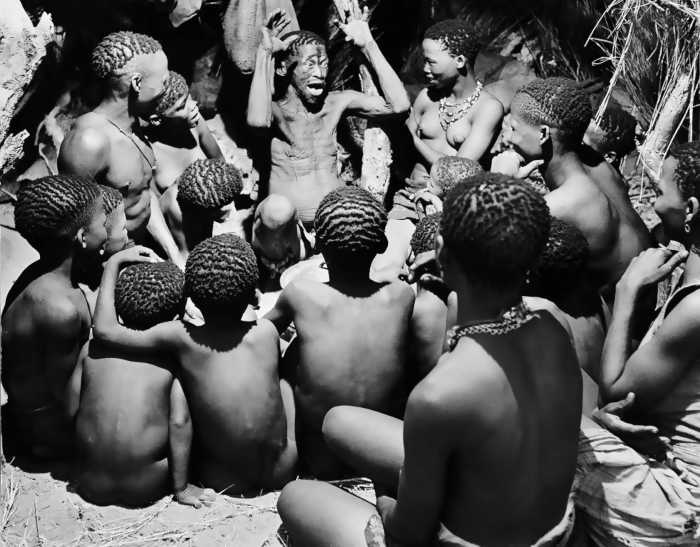

Levando em conta sua superfície corporal, os insetos pesam muito pouco. Um besouro, quando cai de uma grande altitude, atinge rapidamente a velocidade final: a resistência do ar evita que ele caia muito depressa e, após pousar no solo, sai andando aparentemente sem qualquer dano. O mesmo se aplica a pequenos mamíferos como, por exemplo, o esquilo. Um camundongo pode ser arremessado em um poço com 300 metros de profundidade e, se o solo for macio, chegará tonto, mas não estropiado. Em contraposição, os seres humanos são caracteristicamente feridos ou mortos por qualquer queda de altura superior a 2 metros; em virtude de nosso tamanho, pesamos muito para nossa superfície corporal. Nossos ancestrais tinham, por conseguinte, de tomar muito cuidado. Qualquer erro na passagem de galho a galho podia ser fatal. Cada pulo representava uma oportunidade para a evolução. Poderosas forças seletivas estavam em jogo para produzir organismos com graça e agilidade, visão binocular acurada, versáteis habilidades de manipulação, soberba coordenação oculomanual e uma concepção intuitiva da gravitação newtoniana. Cada uma dessas habilidades, entretanto, exigia consideráveis avanços na evolução dos cérebros e particularmente do neocórtex* de nossos ancestrais. A inteligência humana, fundamentalmente, deve muito aos milhões de anos em que nossos ancestrais pularam de galho em galho no alto das árvores.

[Imagem: O apogeu pleistocênico. Da esquerda para a direita: Homo habilis, Homo erectus, homem de Neanderthal, homem de Cro-Magnon.]

[Imagem: As mãos dos animais são adaptadas a seus estilos de vida, e vice-versa. Mostramos aqui a do gambá (A), do musaranho-arborícola (B), do potó (C), do társio (D), do babuíno (E) (caso em que este apêndice em parte como mão e em parte como pé), do orangotango (F) (alongado para agarrar galhos) e do homem (G) (com um polegar em oposição relativamente longo). De Mankind in the Making, de William Howells, desenho de Janis Cirulis (Doubleday)]
E depois que retornamos à savana e abandonamos as árvores, será que ansiamos por aqueles enormes saltos graciosos e aqueles momentos de êxtase da imponderabilidade nos raios de luz do topo das florestas? Será o reflexo do abraço das criancinhas hoje uma tentativa de evitar a queda do alto das árvores? Seriam nossos sonhos noturnos de voar e nossa paixão diurna pelo vôo, como exemplificaram as vidas de Leonardo da Vinci e Konstantin Tsiolkovski, nostálgicas reminiscências daqueles dias passados nos galhos altos das florestas09?
Outros mamíferos, mesmo não-primatas* e não-cetáceos*, possuem neocórtex*. Mas, na linha evolutiva que deu origem ao homem, quando foi que se deu o primeiro desenvolvimento em grande escala do neocórtex*? Embora nenhum de nossos ancestrais símios se encontre à disposição, essa questão pode ser respondida, ou pelo menos abordada: podemos examinar os crânios fósseis. Nos seres humanos, macacos e antropoides, assim como em outros mamíferos, o volume cerebral quase preenche o crânio. Isso não vale, por exemplo, em relação aos peixes. Portanto, tomando o molde de um crânio, podemos determinar o que se denomina o volume intracraniano de nossos ancestrais imediatos e parentes colaterais, e podemos fazer uma grosseira estimativa de seus volumes cerebrais.
A indagação de quem foi e quem não foi ancestral do homem ainda é tema de acalorado debate entre os paleontólogos e quase não há um ano em que não se descubra algum fóssil de aspecto notavelmente humano muito mais antigo do que jamais se supusera antes possível. O que parece inquestionável é que há cerca de 5 milhões de anos havia abundância de antropoides, os australopitecíneos gráceis, que caminhavam sobre dois pés e tinham volume cerebral de aproximadamente 500 cm³, cerca de 100 a mais do que o cérebro do chimpanzé moderno. De posse deste indício, os paleontólogos deduziram que o "bipedalismo precedeu a encefalização", o que equivale a dizer que nossos ancestrais caminhavam sobre dois pés antes de desenvolverem grandes cérebros.
Há 3 milhões de anos, existia uma série de indivíduos bípedes com grande variedade de volume craniano, alguns consideravelmente maiores que os do australopitecíneo grácil da África Oriental, que viveu alguns milhões de anos antes. Um deles, o qual L. S. B. Leakey, o estudioso anglo-queniano do homem primitivo, chamou Homo habilis, tinha um volume cerebral aproximado de 700 cm³. Também dispomos de provas arqueológicas de que o Homo habilis fabricava ferramentas. O conceito de que as ferramentas representavam tanto a causa quanto o efeito do bipedalismo, liberando as mãos, foi concebido pela primeira vez por Darwin. O fato de que essas importantes transformações no comportamento se fazem acompanhar de transformações igualmente importantes no volume cerebral não prova que umas sejam causadas pelas outras; nossa exposição prévia, contudo, faz parecer muito provável essa ligação causal.
O quadro seguinte resume as evidências fósseis, até 1976, de nossos ancestrais e parentes colaterais mais recentes. Os dois tipos razoavelmente diferentes de australopitecíneos não pertenciam ao gênero Homo, não eram humanos; eles ainda eram incompletamente bípedes e possuíam massa cerebral com apenas um terço do tamanho do cérebro do adulto médio de hoje. Se encontrássemos um australopitecíneo no metrô, por exemplo, talvez ficássemos mais impressionados com a quase total ausência de testa. Ele era o mais rude dos rudes. Existem consideráveis diferenças entre as duas espécies de australopitecíneos. A espécie robusta era mais alta e mais pesada, com dentes mais marcantes em forma de "quebra-nozes" e uma impressionante estabilidade evolutiva. O volume intracraniano do A. robustus varia muito pouco de espécime a espécime no decorrer de milhões de anos. O australopitecíneo grácil, a julgar novamente por seus dentes, provavelmente se alimentava tanto de carne quanto de legumes. Era menor e mais ágil, como seu nome indica. Entretanto, é consideravelmente mais antigo e possui muito maior variabilidade do volume intracraniano do que seus primos robustos. O mais importante, porém, é que os locais onde vivia o australopitecíneo grácil revelam uma óbvia indústria: a manufatura de ferramentas feitas de pedra e ossos de animais, chifres e dentes laboriosamente entalhadas, lascadas, atritadas e polidas para fabricar instrumentos capazes de desbastar, lascar, moer e cortar. Nenhuma ferramenta foi atribuída ao A. robustus. A razão entre o peso do cérebro e o peso corporal é quase duas vezes maior no australopitecínio grácil do que no robusto, e é uma especulação natural imaginar qual dos dois fatores representa a diferença entre ter e não ter instrumentos.

(ANCESTRAIS RECENTES E COLATERAIS)

[Imagem: Um grupo de australopitecíneos gráceis há cinco milhões de anos.]
Praticamente na mesma época do surgimento do Australopithecus robustus, apareceu um novo animal, o Homo habilis, o primeiro homem verdadeiro. Ele era maior, tanto no físico quanto no tamanho cerebral, do que os dois australopitecíneos e apresentava uma proporção entre peso cerebral e corporal aproximadamente igual à do australopitecíneo grácil. Surgiu numa época em que, por motivos climáticos, as florestas estavam recuando. O Homo habilis habitava a vasta savana africana, um ambiente extremamente desafiador, repleto de uma enorme variedade de predadores e presas. Nessas planícies de relva baixa surgiram o primeiro homem e o primeiro cavalo modernos. Eles foram quase que exatamente contemporâneos.
Nos últimos 60 milhões de anos, tem havido uma contínua evolução dos ungulados, bem documentada nos registros fósseis e finalmente culminando no cavalo moderno. O Eohippus, o cavalo de uns 50 milhões de anos atrás, tinha o tamanho aproximado de um collie inglês, com um volume cerebral de mais ou menos 25 cm³, e uma relação entre peso cerebral e peso corporal igual à metade do valor dos mamíferos contemporâneos análogos. Desde então, os cavalos têm experimentado uma impressionante evolução — tanto absoluta quanto relativa — no tamanho cerebral, com maior desenvolvimento do neocórtex* e principalmente dos lobos frontais* — uma evolução certamente acompanhada por grandes progressos na inteligência equina. Eu me pergunto se o desenvolvimento paralelo da inteligência do cavalo e do homem poderia ter uma causa em comum. Será que os cavalos, por exemplo, tinham de ser velozes, inteligentes e ter sentidos aguçados para escapar de predadores que caçavam tanto primatas* quanto equinos?
O H. habilis tinha uma fronte alta, sugerindo razoável desenvolvimento das áreas neocorticais nos lobos frontais* e temporais, assim como das regiões cerebrais, a serem discutidas mais tarde, que parecem estar ligadas à linguagem. Caso encontrássemos o Homo habilis vestido na última moda, andando pelas avenidas de uma metrópole moderna, provavelmente lançaríamos apenas um olhar de passagem — e assim mesmo devido a sua estatura relativamente baixa. Atribui-se ao Homo habilis uma variedade de instrumentos de considerável requinte. Além disso, existem indícios, tais como diversos arranjos circulares de pedras, de que o Homo habilis pode ter construído abrigos; que muito antes das eras glaciais pleistocênicas, muito antes de os homens habitarem regularmente as cavernas, o H. habilis já construía casas ao ar livre — provavelmente de madeira, varas, palha e pedra.
De vez que o H. habilis e o A. robustus surgiram na mesma época, é muito improvável que um tenha sido ancestral do outro. O australopitecíneo grácil também era contemporâneo do Homo habilis, porém muito mais antigo. Portanto, é possível — embora de forma alguma garantido — que tanto o H. habilis, com um futuro promissor, quanto o A. robustus, um beco sem saída em termos de evolução, tenham surgido do A. africanus grácil, que sobreviveu o suficiente para ser seu contemporâneo.
O primeiro homem cujo volume intracraniano se sobrepõe ao do homem moderno é o Homo erectus. Durante muitos anos, os principais espécimes de H. erectus conhecidos tiveram origem na China e admitia-se que tivessem meio milhão de anos de idade. Mas, em 1976, Richard Leakey, do Museu Nacional do Quênia, apresentou um crânio quase completo de Homo erectus encontrado em camadas geológicas de 1,5 milhão de anos atrás. Desde que os espécimes chineses de Homo erectus associam-se claramente a restos de acampamentos, é possível que nossos ancestrais tenham domesticado o fogo há muito mais que meio milhão de anos — o que torna Prometeu muito mais antigo do que se poderia supor.

[Imagem: A savana da África oriental próxima a Olduvai Gorge há alguns milhões de anos. No primeiro plano à direita vemos três hominídeos, talvez australopitecíneos, talvez Homo habilis. O vulcão ativo ao fundo é o atual monte Ngorongoro.]
Talvez o aspecto mais surpreendente em relação ao registro arqueológico de instrumentos seja o fato de que, assim que começaram a surgir, fizeram-no em enorme abundância. É como se um australopitecíneo grácil inspirado tivesse descoberto pela primeira vez o uso das ferramentas e tivesse imediatamente ensinado a habilidade de fabricá-las a seus parentes e amigos. Não há meio de explicar o surgimento descontínuo dos instrumentos de pedra, a menos que os australopitecíneos contassem com instituições educativas. Deve ter existido alguma espécie de organização do trabalho em pedra que foi passando de geração a geração o precioso conhecimento acerca do fabrico e uso de instrumentos — conhecimento este que impulsionaria finalmente esses frágeis e quase indefesos primatas* ao domínio do planeta Terra. Não se sabe se o gênero Homo inventou por si mesmo os instrumentos ou se aproveitou a descoberta do gênero Australopithecus.
Vemos no quadro que a relação entre peso cerebral e peso corporal corresponde, dentro da variação das medidas, aproximadamente ao mesmo valor no australopitecíneo grácil, no Homo habilis, no Homo erectus e no homem moderno. Os progressos que fizemos nos últimos milhões de anos não podem, por conseguinte, ser explicados pela relação entre cérebro e massa corporal, mas pela crescente massa cerebral total, o aperfeiçoamento da especialização de novas funções e de aumento da complexidade cerebral, e sobretudo o aprendizado extra-somático.
L. S. B. Leakey destacou que os registros fósseis de alguns milhões de anos atrás são repletos de grande variedade de formas humanoides, das quais um interessante número encontra-se com buracos ou fraturas no crânio. Algumas dessas lesões podem ter sido provocadas por leopardos ou hienas; Leakey e o anatomista sul-africano Raymond Dart, contudo, acreditam que muitas delas foram feitas por nossos ancestrais. Nas eras pliocênica/pleistocênica havia quase certamente uma intensa competição entre muitas formas humanoides, das quais apenas uma estirpe sobreviveu — os habilidosos possuidores de instrumentos —, aquela que nos deu origem. O papel que o ato de matar desempenhou nessa competição permanece uma indagação em aberto. O australopitecíneo grácil era ereto, ágil, veloz e media 1,5 metro de altura: "gente miúda". Não haveria a possibilidade de nossos mitos de gnomos, anões e gigantes serem uma memória genética ou cultural vinda daqueles tempos?
Na mesma época em que o volume craniano do hominídeo sofria um espetacular aumento, deu-se também notável transformação na anatomia humana; como observou o anatomista inglês Sir Wilfred Le Gros Clark, da Universidade de Oxford, houve uma reformulação radical da pelve humana. Isso provavelmente representou uma adaptação para permitir que nascesse vivo o último modelo de bebê com cérebro grande. Hoje, é improvável que qualquer aumento considerável da cintura pélvica na região do canal de parto seja possível sem comprometer sobremaneira a capacidade da mulher de caminhar eficientemente. (Ao nascimento, as meninas já têm uma pelve bem maior, tal como a abertura pélvica esquelética, do que os meninos; outro grande aumento do tamanho da pelve feminina ocorre na puberdade.) O surgimento paralelo desses dois eventos evolutivos ilustra generosamente como funciona a seleção natural*. As mães com pelve hereditariamente grande eram capazes de dar à luz crianças com cérebros grandes, que, em virtude de sua inteligência superior, eram capazes de competir com êxito na idade adulta com a prole de cérebro pequeno das mulheres de pelve estreita. Aquele que tivesse uma machadinha de pedra era mais propenso a vencer uma contenda de opiniões nas eras pleistocênicas. E o mais importante, ele era um caçador mais bem-sucedido. A invenção e a manufatura continuada das machadinhas de pedra, entretanto, exigiam maiores volumes cerebrais.
Pelo que sei, o parto em geral só costuma ser doloroso em um dos milhões de espécies terrestres: os seres humanos. Isso deve ser uma consequência do recente e contínuo aumento no volume craniano. Os homens e mulheres modernos têm caixas cranianas com o dobro do volume das do Homo habilis. O parto é doloroso porque a evolução do crânio humano foi espetacularmente rápida e recente. O anatomista americano C. Judson Herrick descreveu o desenvolvimento do neocórtex* nos seguintes termos: "Seu crescimento explosivo em fase tardia da filogenia é um dos casos mais extraordinários de transformação evolutiva na anatomia comparada". O fechamento incompleto do crânio ao nascimento, as fontanelas, muito provavelmente representa uma acomodação imperfeita a essa recente evolução cerebral.
A ligação entre a evolução da inteligência e da dor do parto parece estar inesperadamente expressa no Gênese. Como castigo por comer o fruto da árvore da ciência do bem e do mal, 10: "Em meio a dores darás à luz filhos" (Gênese 3:16). É interessante notar que não é a obtenção de qualquer espécie de conhecimento que Deus proibiu, mas especificamente o conhecimento da diferença entre o bem e o mal — ou seja, os julgamentos abstratos e morais que, se é que residem em algum ponto, este é o neocórtex*. Mesmo na época em que a história do Éden foi escrita, o desenvolvimento de habilidades cognitivas era visto como gerador de poderes divinos e responsabilidades terríveis para o homem. Disse Deus: "Eis que o homem se tornou como um de nós, conhecedor do bem e do mal; assim, para que não estenda a mão, e tome também da Árvore da Vida, e coma e viva eternamente" (Gênese 3:22), ele deve ser expulso do Paraíso. Deus coloca querubins com espada de fogo no Paraíso para guardar a Árvore da Vida da ambição do homem11.
.
[Imagem: A criação de Adão: alto-relevo na porta da Igreja de São Petronio, em Bolonha, de autoria de Jacopo della Quercia. (Foto Alinari)]

[Imagem: A tentação de Adão e Eva por um réptil com cabeça notavelmente humana: alto-relevo na porta da Igreja de São Petronio, em Bolonha, de autoria de Jacopo della Quercia. (Foto Alinari)]
Talvez o Jardim do Éden não seja tão diferente da Terra sob o ponto de vista de nossos ancestrais de uns 3 ou 4 milhões de anos atrás durante uma lendária idade áurea em que o gênero Homo estava perfeitamente unido a outras feras e vegetais. Após o exílio do Éden, vemos no contexto bíblico a espécie humana condenada à morte; ao trabalho árduo; ao uso de roupas e à moderação como preventivos da estimulação sexual; ao domínio dos homens sobre as mulheres; à domesticação das plantas (Caim); à domesticação dos animais (Abel); e ao crime (Caim mata Abel). Isso tudo corresponde razoavelmente bem aos indícios históricos e arqueológicos. Na metáfora do Éden, não há evidências de crime antes da expulsão do Paraíso. Mas os crânios fraturados de bípedes não-pertencentes à linha evolutiva do homem podem significar que nossos ancestrais matavam, mesmo no Éden, muitos animais semelhantes ao próprio homem.
[Imagem: A expulsão do Éden: alto-relevo na porta da Igreja de São Petronio, em Bolonha, de Jacopo della Quercia. (Foto Alinari)]
A civilização não se desenvolveu a partir de Abel, mas de Caim, o criminoso. A palavra "civilização" deriva da palavra latina correspondente a cidade. O tempo de lazer, a organização comunitária e a especialização do trabalho nas primeiras cidades é que permitiram o surgimento das artes e da tecnologia, as quais consideramos a característica básica das civilizações. A primeira cidade, de acordo com o Gênese, foi construída por Caim, inventor da agricultura — uma tecnologia que exige residência fixa. E foram seus descendentes, os filhos de Lamech, que inventaram tanto o "trabalho com latão e ferro" quanto os instrumentos musicais. A metalurgia e a música — tecnologia e arte — originam-se de Caim. E as paixões que levam ao crime não se reduzem. Lamech diz: "Pois eu matei um homem por me ter ferido e um jovem por me ter ofendido; se Caim for vingado sete vezes, Lamech o será 77 vezes". A ligação entre crime e invenção nos tem acompanhado desde então. Ambos derivam da agricultura e da civilização.
Uma das primeiras consequências da capacidade de prever que acompanharam a evolução dos lobos pré-frontais deve ter sido a consciência da morte. O homem é provavelmente o único organismo da Terra com visão relativamente clara da inevitabilidade de sua morte. As cerimônias fúnebres que incluem o sepultamento de alimentos e utensílios junto com o falecido remontam pelo menos ao tempo de nossos primos de Neanderthal, sugerindo não apenas uma vasta consciência da morte, mas também uma cerimônia ritual já desenvolvida para manter o falecido na vida do além. Não é que a morte não existisse antes do espetacular crescimento do neocórtex*, antes da expulsão do Paraíso; o fato é que, até então, ninguém se tinha dado conta de que a morte seria seu destino.
A expulsão do Éden parece ser uma metáfora para alguns dos principais acontecimentos biológicos na evolução humana recente. Pode ser que isso seja responsável por sua popularidade12. Não é tão notável a ponto de nos obrigar a crer em uma espécie de memória biológica dos acontecimentos históricos, mas parece-me suficientemente próximo para arriscar pelo menos levantar a questão. O único repositório de tal memória biológica é, naturalmente, o código genético.
Há 55 milhões de anos, no Período Eocênico, havia uma grande proliferação de primatas*, tanto arbóreos quanto terrestres, e a evolução de uma linhagem de descendência que finalmente levou ao homem. Alguns primatas* daquela época — por exemplo, um pró-símio denominado Tetonius — exibem em seus moldes intracranianos diminutas protuberâncias onde os lobos frontais* mais tarde se desenvolverão. A primeira evidência fóssil de um cérebro de aspecto apenas vagamente humano data de 18 milhões de anos atrás, no Período Miocênico, quando surgiu um antropoide que denominamos Proconsul ou Dryopithecus. O Proconsul era quadrúpede e arbóreo, provável ancestral dos grandes macacos modernos e possivelmente também do Homo sapiens. Ele é, em linhas gerais, aquilo que poderíamos esperar de um ancestral comum dos macacos e do homem. (Seu contemporâneo próximo, o Ramapithecus, é considerado por alguns antropólogos um ancestral do homem.) Os moldes intracranianos do Proconsul mostram lobos frontais* reconhecíveis, mas muito menos desenvolvidos que os dos macacos de hoje e do homem. Seu volume craniano era ainda muito pequeno. O maior surto de evolução do volume craniano ocorreu nos últimos milhões de anos.
Os pacientes que foram submetidos a lobotomias* pré-frontais têm sido descritos como perdedores da "sensação de continuidade do próprio ser" — o sentimento de que sou determinado indivíduo com certo controle sobre minha vida e minhas circunstâncias, a minha essência, a singularidade do indivíduo. É possível que os mamíferos inferiores e os répteis, carecendo de lobos frontais* extensos, também careçam dessa sensação, real ou ilusória, da individualidade e do livre-arbítrio, tão característicos da espécie humana e que podem ter sido pela primeira vez experimentados de forma rudimentar pelo Proconsul.
O desenvolvimento da cultura humana e a evolução dos aspectos fisiológicos que consideramos caracteristicamente humanos, mais provavelmente, prosseguiram quase literalmente de mãos dadas: quanto melhores nossas predisposições genéticas para correr, comunicar e manipular, tanto mais provavelmente desenvolveríamos instrumentos eficazes e estratégias de caça; quanto mais adaptáveis nossos instrumentos e estratégias de caça, tanto mais provável seria a sobrevivência de nossos dotes genéticos característicos. O antropólogo americano Sherwood Washburn, da Universidade da Califórnia, o maior defensor desse ponto de vista, afirma: "Muito do que consideramos humano evoluiu muito depois do uso de instrumentos. Talvez seja mais correto considerar grande parte de nossa estrutura resultado da cultura do que considerar que o homem anatomicamente semelhante a nós desenvolveu lentamente a cultura".
Alguns estudiosos da evolução humana admitem que parte da pressão de seleção subjacente a esse enorme surto na evolução cerebral ocorreu no córtex motor* e não teve início nas regiões neocorticais responsáveis pelos processos cognitivos. Eles salientam a notável capacidade de os seres humanos lançarem projéteis com precisão, moverem-se graciosamente e — como Louis Leakey apreciava ilustrar por demonstração direta, nus, ultrapassarem e imobilizarem animais de caça. Esportes como o beisebol, o futebol, a luta livre, o xadrez e as guerras podem dever seu encanto — assim como a grande influência do sexo masculino — a essas habilidades caçadoras preestabelecidas, que tanto nos serviram durante milhões de anos da história humana, mas que hoje encontram pouca aplicação prática.
A caçada e a defesa efetiva contra predadores representavam, ambas, aventuras arriscadas onde a cooperação era necessária. O ambiente no qual o homem se desenvolveu na África, nas eras Pliocênica e Pleistocênica era habitado por grande variedade de mamíferos carnívoros aterrorizantes, sendo talvez os mais medonhos os bandos de grandes hienas. Era muito difícil defender-se sozinho de um tal bando. Tocaiar grandes animais, quer solitários ou em manadas, é perigoso; é necessário certa comunicação por gestos entre os caçadores. Sabemos, por exemplo, que logo após o homem ter penetrado na América do Norte através do estreito de Bering, no Período Pleistocênico, houve uma matança maciça e espetacular de grandes animais de caça, geralmente conduzidos pelos penhascos. A fim de espreitar um único gnu ou conduzir uma manada de antílopes em pânico para a morte, os caçadores devem compartilhar pelo menos de uma linguagem simbólica mínima. O primeiro ato de Adão foi linguístico muito antes da expulsão do Paraíso e mesmo antes da criação de Eva: ele deu nome aos animais do Éden.
Algumas formas de linguagem simbólica por gestos, naturalmente, tiveram origem muito antes dos primatas*; os canídeos e muitos outros mamíferos que exibem domínio hierárquico podem indicar a submissão desviando os olhos ou expondo o pescoço. Já mencionamos outros rituais de submissão em primatas*, como os macacos. As saudações humanas de se curvar, balançar a cabeça e fazer reverência podem ter origem semelhante. Inúmeros animais parecem transmitir amizade através de mordidas não suficientemente fortes para doer, como se dissessem: "Sou capaz de morder você, mas não quero fazê-lo". A elevação da mão direita como símbolo de saudação entre os seres humanos possui exatamente o mesmo significado: "Eu poderia atacá-lo com uma arma, mas não quero empunhar uma"13.
Ricas linguagens gestuais foram empregadas por muitas comunidades humanas caçadoras — por exemplo, entre os índios da planície, que também utilizavam os sinais de fumaça. Segundo Homero, a vitória dos helênicos em Troia foi comunicada de Ilium até a Grécia, uma distância de algumas centenas de milhas, através de uma série de sinais de fumaça. A época era aproximadamente 1100 a.C. Entretanto, o repertório de ideias e a velocidade com que as ideias podem ser comunicadas pela linguagem através de gestos ou sinais são limitados. Darwin assinalou que as linguagens gestuais não podem ser efetivamente empregadas quando nossas mãos estão ocupadas com outras coisas, ou à noite, ou quando a visão das mãos está impedida. Pode-se imaginar que as linguagens por gestos foram gradualmente complementadas e depois suplantadas pelas linguagens verbais que originariamente devem ter sido onomatopaicas (ou seja, imitativas do som do objeto ou da ação descrita). As crianças chamam os cachorros de "au-au". Em quase todas as línguas humanas, a palavra pela qual a criança chama a "mãe" parece imitar o som produzido inadvertidamente pelo sugar do seio materno. Tudo isso, contudo, não poderia ter ocorrido sem uma reestruturação do cérebro.
Sabemos, a partir de restos de esqueletos relacionados com o homem primitivo, que nossos ancestrais eram caçadores. Sabemos o suficiente a respeito da caça dos grandes animais para percebermos a necessidade de alguma linguagem para a caçada em conjunto. Mas as ideias sobre a antiguidade da linguagem receberam uma medida de inesperado apoio através dos estudos pormenorizados de moldes fósseis realizados pelo antropólogo americano Ralph L. Holloway, da Universidade de Colúmbia. Os moldes de crânios fósseis de Holloway são feitos de látex de borracha, e ele tenta deduzir algo da minuciosa morfologia do cérebro a partir da forma do crânio. É como uma espécie de frenologia, mas no interior, não no exterior, e com base muito mais lógica. Holloway acredita que uma região do cérebro conhecida como área de Broca*, um dos diversos centros indispensáveis à fala, pode ser identificada nos moldes internos dos fósseis; e ele descobriu indícios da área de Broca* em um fóssil de Homo habilis com mais de 2 milhões de anos de idade. O desenvolvimento da linguagem, dos instrumentos e da cultura podem ter ocorrido mais ou menos simultaneamente.
Por falar nisso, existiram criaturas humanoides que viveram há apenas algumas dezenas de milhares de anos — o homem de Neanderthal e o de Cro-Magnon — que apresentavam volumes cerebrais de 1500 cm³ em média; ou seja, ultrapassavam o nosso em mais de 100 cm³. Os antropólogos, em sua maioria, supõem que não descendemos do homem de Neanderthal e não devemos descender também do homem de Cro-Magnon. Suas existências, entretanto, suscitam a indagação: quem eram aqueles camaradas? Quais eram seus talentos? O homem de Cro-Magnon também era muito grande: alguns espécimes tinham muito mais de 1,80 metro de altura. Já vimos que uma diferença de 100 cm³ no volume cerebral não parece importante, e talvez eles não fossem mais inteligentes do que nós ou nossos ancestrais imediatos; ou talvez eles tivessem outras dificuldades físicas ainda desconhecidas. O homem de Neanderthal era rude, mas sua cabeça era comprida no sentido anteroposterior; em contraposição, nossas cabeças não são tão profundas, mas são mais altas. Teria o crescimento cerebral do homem de Neanderthal ocorrido nos lobos parietais* e occipitais, e o principal desenvolvimento cerebral de nossos ancestrais nos lobos frontais* e temporais? Será que o homem de Neanderthal desenvolveu uma mentalidade bastante diferente da nossa, e que nossa capacidade linguística superior e nossas habilidades de previsão nos permitiram destruir completamente nossos corpulentos e inteligentes primos?
Pelo que sabemos, nada de semelhante à inteligência humana surgiu na Terra antes de alguns milhões, ou pelo menos algumas dezenas de milhões de anos atrás. Mas isso representa décimos de 1% da idade da Terra, no final de dezembro no Calendário Cósmico. Por que apareceu tão tarde? Parece claro que a resposta reside no fato de alguma propriedade particular dos cérebros dos primatas* superiores e dos cetáceos* não se ter desenvolvido senão recentemente. Mas que propriedade é essa? Posso sugerir pelo menos quatro possibilidades, todas já mencionadas, quer explícita, quer implicitamente: (1) nunca houve antes um cérebro tão maciço; (2) nunca houve antes um cérebro com relação tão grande entre sua massa e a massa corporal; (3) nunca houve antes um cérebro com determinadas unidades funcionais (lobos frontais* e temporais grandes, por exemplo); (4) nunca houve antes um cérebro com tantas conexões e sinapses nervosas. (Parecem existir indícios de que, juntamente com a evolução do cérebro humano, pode ter havido um aumento do número de conexões de cada neurônio com seu vizinho e do número de micro-circuitos.) As explicações 1, 2 e 4 argumentam que uma transformação quantitativa produziu uma transformação qualitativa. Não me parece que uma escolha bem definida entre essas quatro alternativas possa ser feita no momento, e suspeito que a verdade abrangerá realmente grande parte, se não todas essas possibilidades.
Sir Arthur Keith, estudioso inglês da evolução humana, propôs aquilo que ele chamou de “Rubicão”14 na evolução do cérebro humano. Ele considerou que com o volume cerebral do Homo erectus — aproximadamente 750 cm3, mais ou menos uma cilindrada de uma motocicleta veloz — as qualidades exclusivamente humanas começaram a surgir. O “Rubicão” pode ter sido, naturalmente, mais qualitativo do que quantitativo. Talvez a diferença não fosse tanto o acréscimo de 200 cm3, mas algumas evoluções específicas nos lobos frontal, temporal e parietal que nos proporcionaram a capacidade analítica, a previsão e a ansiedade. Enquanto debatemos a que corresponde o Rubicão, a ideia de alguma espécie de Rubicão não está fora de propósito. Mas se existe um Rubicão em algum ponto próximo a 750 cm3, já que diferenças da ordem de 100 a 200 cm3 ― pelo menos para nós — não parecem ser determinantes obrigatórios da inteligência, não seriam os antropoides inteligentes de alguma forma reconhecidamente humana? O volume cerebral típico de um chimpanzé gira em torno de 400cm3; o do gorila das terrasbaixas, 500. Esses são os limites de variação dos volumes cerebrais entre os australopitecíneos gráceis utilizadores de instrumentos. O historiador judeu Josephus acrescentou à lista de penalidades e tribulações que acompanham o exílio da espécie humana do Éden a perda de nossa capacidade de comunicação com os animais. Os chimpanzés possuem grandes cérebros; apresentam o neocórtex* bem desenvolvido; eles também têm longas infâncias eextensos períodos de plasticidade*. Serão capazes do pensamento abstrato? Se são inteligentes, por que não falam?

[Imagem: O desenvolvimento da linguagem humana representou um ponto crucial na evolução do homem. Entre seus pontos mais altos, encontram-se as culturas de transmissão oral antes da invenção da escrita. (Foto de Nat Farbman, Life. Cortesia da Time-Life Picture Agency, © Time Inc.)]
A linguagem humana é certamente um fenômeno extraordinário. Nenhum outro animal desenvolveu uma linguagem simbólica complexa, com sintaxe e gramática, capaz de expressar ideias abstratas e transmitir cultura. A linguagem humana é tão complexa que não podemos sequer imaginar como teria sido o primeiro passo em sua evolução. A linguagem humana pode ter se desenvolvido a partir de uma linguagem por gestos, ou pode ter surgido de uma linguagem onomatopaica primitiva. Talvez tenha havido um estágio inicial em que os sons imitando objetos e ações foram combinados com gestos para formar uma linguagem mista. Talvez a linguagem tenha se desenvolvido a partir de cantos rituais ou cânticos, como sugerido por Darwin. Não sabemos.
O que sabemos é que a linguagem humana depende de certas áreas especializadas do cérebro, localizadas principalmente no hemisfério esquerdo na maioria das pessoas. A área de Broca*, situada na parte posterior do lobo frontal* esquerdo, está associada à produção da fala; a área de Wernicke, situada na parte superior do lobo temporal* esquerdo, está associada à compreensão da fala. Essas duas áreas estão conectadas por um feixe de fibras nervosas denominado fascículo arqueado. Lesões nessas áreas produzem diferentes tipos de afasia* (perda da capacidade de falar ou compreender a fala). A afasia* de Broca envolve dificuldade na produção da fala, enquanto a afasia* de Wernicke envolve dificuldade na compreensão da fala. A existência dessas áreas especializadas sugere que a capacidade linguística humana depende de certas adaptações cerebrais específicas que podem não estar presentes em outros animais, mesmo nos primatas* mais próximos a nós.